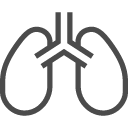
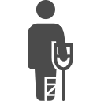
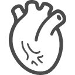

外来
受付をして、診察、検査、処置などを受けます。外来リハビリテーションも含まれます。
内科
全身性あるいは内臓などの病気を、主に薬物療法によって治療する医学・医療の分野。

呼吸器内科
呼吸器内科では、肺や気道等に関する疾患を扱います。

整形外科
運動器官を構成するすべての組織、つまり骨、軟骨、筋、靭帯、神経などの疾病・外傷を対象とし診療を行。
脳神経外科
通称、脳外科と言われますが、実際には脳神経外科といって脳と脊髄、神経を診ます。

循環器科
循環器科はおもに心臓病や血管の病気の専門科です。